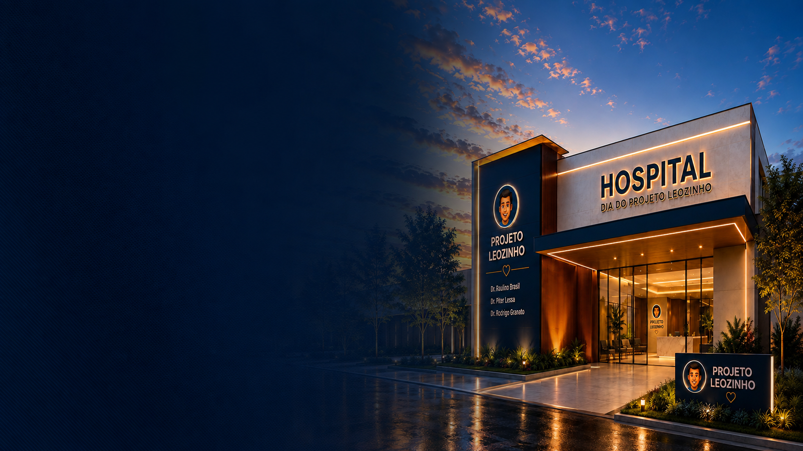
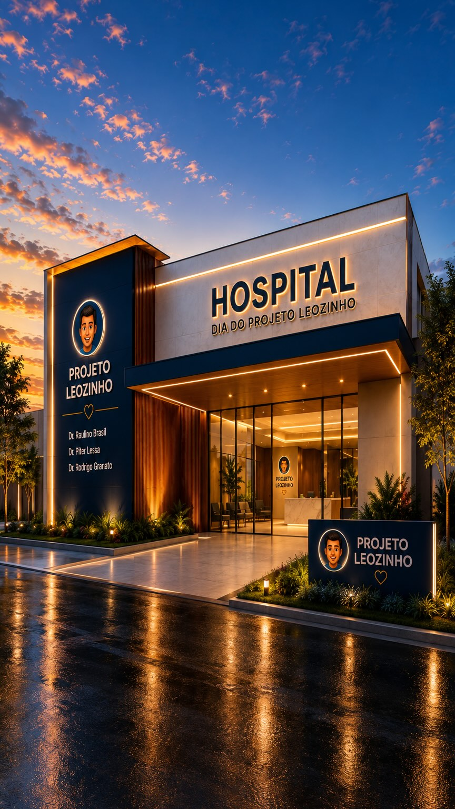
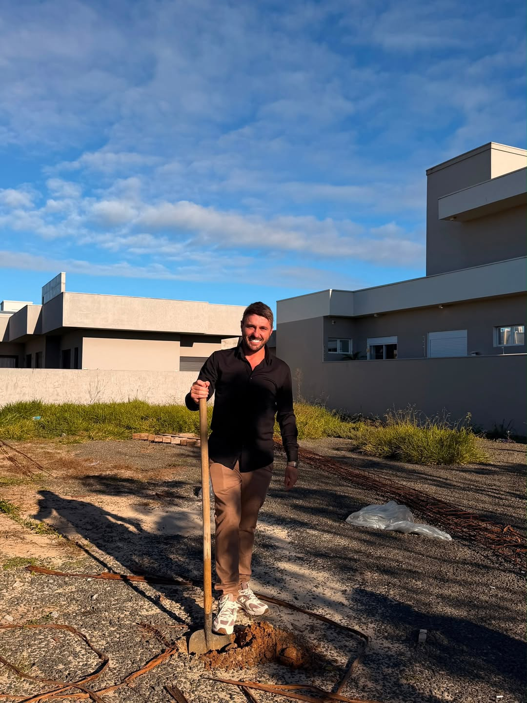

Representação visual, projeto conceitual
Projeto Leozinho · Reconstruindo faces
Mais de 550 cirurgias de reconstrução facial.
Cirurgia, cuidado e acesso para pessoas que enfrentam condições faciais complexas.
A origem
Uma promessa que se transformou em missão.
O Projeto Leozinho nasceu de um dos momentos mais delicados da vida do Dr. Raulino Brasil. Durante a internação de seus filhos gêmeos, que nasceram prematuros e precisaram permanecer em uma UTI neonatal, ele fez uma promessa: se eles superassem aquela fase, dedicaria parte de sua profissão a ajudar pessoas que não tivessem condições de acessar determinados tratamentos.
Em 2021, essa promessa ganhou forma através do Projeto Leozinho, oferecendo reconstrução facial gratuita a pacientes com casos complexos. Mais do que uma iniciativa social, o projeto representa uma forma de transformar gratidão em cuidado e usar a profissão para devolver esperança, dignidade e novas possibilidades a quem mais precisa.
Como o projeto funciona
Objetivo
Procedimentos de reconstrução facial em pacientes com tumores, deformidades, síndromes e sequelas de acidentes.
A iniciativa realiza cerca de um a dois procedimentos por dia.
Custo simbólico
Devido a normas éticas que não permitem atendimentos totalmente gratuitos, o projeto cobra o valor simbólico de R$ 1 por cirurgia.
Por que "Leozinho"?
Léo foi o primeiro paciente operado pela iniciativa. Aos 17 anos, enfrentava a neurofibromatose e já havia passado por sete cirurgias. Após ser operado pelo Dr. Raulino Brasil, viveu uma importante transformação em sua rotina. Sua história marcou profundamente o projeto e, como forma de homenagem, a iniciativa passou a levar o nome Projeto Leozinho.
Histórias em movimento
Vídeos do Projeto Leozinho
O próximo capítulo
Um hospital construído para ampliar o acesso.
Está em desenvolvimento, em Araranguá (SC), um hospital próprio dedicado ao Projeto Leozinho, para ampliar a capacidade de atendimento, aumentar o número de cirurgias e receber pacientes de diferentes regiões do país com mais segurança e organização.


Você também pode fazer parte dessa construção.
Campanha oficial para a construção do Hospital Projeto Leozinho, com meta de R$ 1.200.000, destinada à estrutura física, materiais, equipamentos e itens necessários para colocar a unidade em funcionamento.
Reconhecimento
Uma iniciativa que ganhou o Brasil.
A Assembleia Legislativa de Santa Catarina já registrou congratulações formais ao Dr. Raulino Brasil pelo Projeto Leozinho e seu impacto social.
G1 Santa Catarina
Projeto Leozinho realiza cirurgia de reconstrução em mulher que teve o lábio arrancado por cachorro
Ver matéria ›Assembleia Legislativa de SC (ALESC)
Camilo Martins entrega moção de reconhecimento ao cirurgião Raulino Brasil
Ver matéria ›Perguntas frequentes
Quem pode participar?
Pessoas com condições faciais complexas sem recursos para acessar tratamentos podem ser encaminhadas para avaliação e triagem.
Quais casos são atendidos?
Deformidades faciais, sequelas de acidentes, tumores, paralisia facial, neurofibromatose, malformações, queimaduras, Síndrome de Parry-Romberg e outros casos avaliados individualmente.
Como indicar um paciente?
Entre em contato com a equipe do Projeto Leozinho para verificar os critérios atuais e iniciar o processo.
Atende pessoas de outros estados?
Sim, o projeto já atendeu pacientes de diferentes regiões do Brasil, mediante avaliação prévia.
Como ajudar o Projeto Leozinho?
Apoiando a campanha oficial do Hospital Projeto Leozinho ou compartilhando o projeto.
Para onde vai o dinheiro da campanha?
Para a construção do hospital: estrutura física, materiais, equipamentos e itens para colocar a unidade em funcionamento.
Como acompanhar a construção?
As atualizações são divulgadas pelos canais oficiais do Projeto Leozinho.